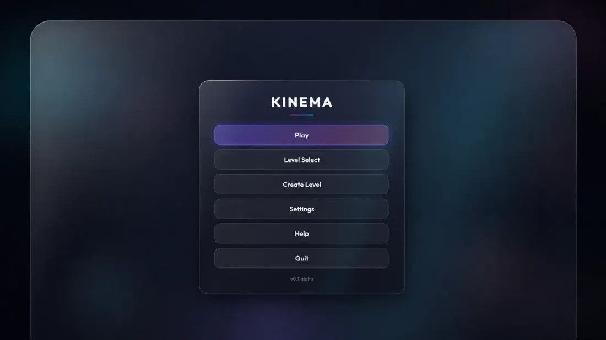

Profile VP Product & Technology, Interior Company at Square Yards
Make the uncertain operable
I lead product and technology for Interior Company at Square Yards, and stay hands-on with AI and real-time 3D. My work spans games, immersive training and design software.
Zone 01Optics
Applied AI
Products where open-ended generation meets decisions a business has to preserve: rooms, prices, production handoffs.
-
 Designesto
AI design studio for spaces: explore room directions, revise existing rooms, and move from sketches to renders and 360° experiences.
Designesto
AI design studio for spaces: explore room directions, revise existing rooms, and move from sketches to renders and 360° experiences.
-
 PropVR AI → Craft
I built the initial 22-tool AI MVP across five workflow studios. PropVR’s team developed it into Craft, a public creative platform for AEC.
PropVR AI → Craft
I built the initial 22-tool AI MVP across five workflow studios. PropVR’s team developed it into Craft, a public creative platform for AEC.
Zone 02Harness
Immersive systems
Co-founded GreyKernel and led technology across VR learning, enterprise training and simulation.

Zone 03Footing
Real-time 3D
The ground everything else stands on: editors, engines and browser graphics that have to run on real hardware.
-
 Blocks
A browser-based interior-design system connecting spatial planning, product choices, pricing, quality checks and production handoffs.
Blocks
A browser-based interior-design system connecting spatial planning, product choices, pricing, quality checks and production handoffs.
-
 SpaceCraft Pro
A real-time room editor connected to pricing, CAD and manufacturing workflows.
SpaceCraft Pro
A real-time room editor connected to pricing, CAD and manufacturing workflows.
-

Kinema Game development in the browser: third-person gameplay, physics and a level editor in one TypeScript application.
LogWriting